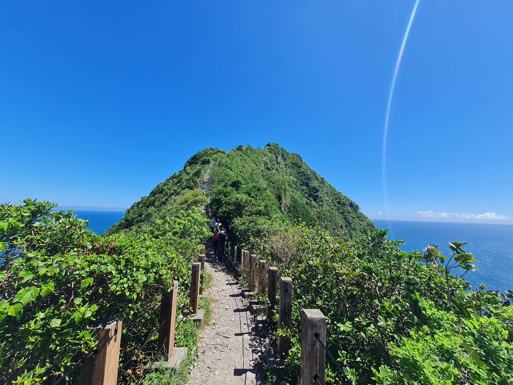
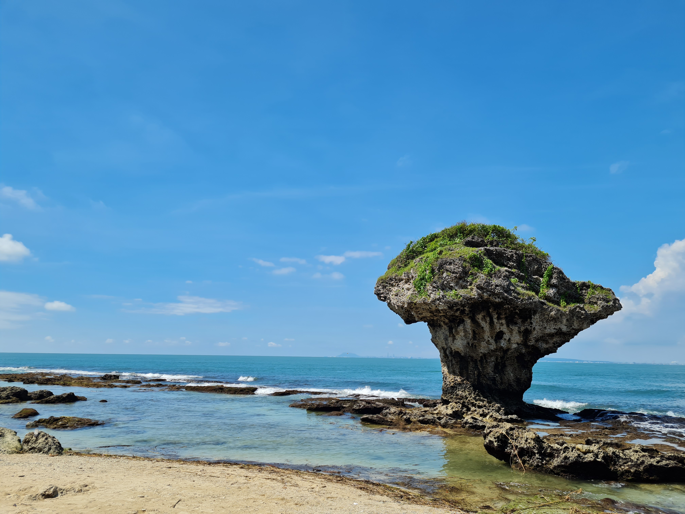

Our ocean
and mountain Taiwan Trip

Mountain
Keelung Islet is a small island in Zhongzheng District, Keelung, Taiwan and 4.9 km away from the Port of Keelung. It has an area of 27,005.593 m² or 23.91 ha. It is 910 m in length, and 410 m in width including the artificial harbor, the highest point is 182 m above sea level.

Sea
Liuqiu, also known by several other names, is a coral island in the Taiwan Strait about 13 kilometers southwest of the main island of Taiwan. It has an area of 6.8 km² and approximately 13,000 residents, the vast majority of whom share only 10 surnames